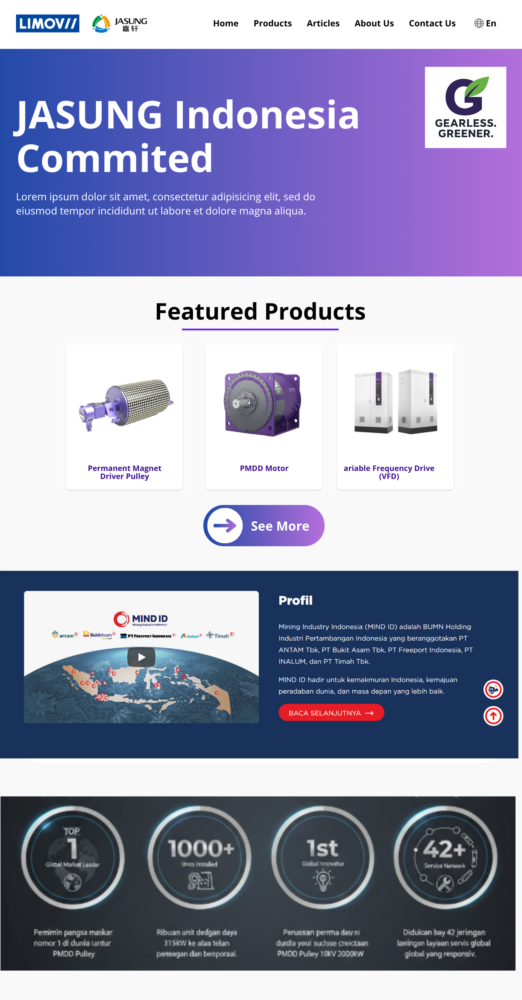

(Initial Sketch/Low-Fidelity Mockup: Strategic visualization of the Information Architecture for Lead Generation and Enterprise Client Profiling. Project is currently on-going.)
LIMOV x JASUNG
Web Developer (UI/UX Strategy & Implementation) - On-Going
Collaborated with Limov, a material-handling solutions provider serving enterprise clients such as PT Freeport Indonesia, to support the market introduction of Jasung, a market-leading Permanent Magnet Direct-Drive (PMDD) industrial drive solution.
Contributed to translating the complex business vision from two key stakeholders (Director & HR) into a user-centric web interface design.
- Contributed to requirements discovery with 2 key stakeholders (Director & HR) to define product positioning and enterprise buyer evaluation logic.
- Developed the preliminary UI/UX structure and Information Architecture (Low-Fidelity Mockup) to guide the future high-fidelity design in Figma, ensuring clear product value communication.
- Coordinated the design-to-development handoff to ensure alignment between messaging, interface behavior, and implementation.